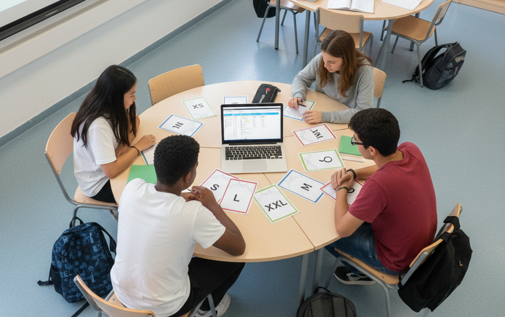
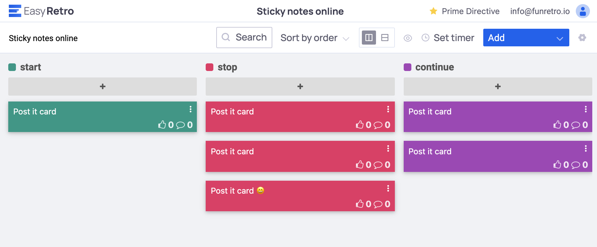

Tutorial de SCRUM para módulo de Proyecto Intermodular de 2º DAM
Índice
Introducción a Scrum
Descargar este tutorial en PDF
Scrum es un marco que permite el trabajo colaborativo entre equipos. Al igual que un equipo de rugby (de donde proviene su nombre) cuando entrena para un gran partido, scrum anima a los equipos a aprender a través de las experiencias, a autoorganizarse mientras aborda un problema y a reflexionar sobre sus victorias y derrotas para mejorar continuamente.s
Normalmente son los equipos de desarrollo de software los que utilizan con mayor frecuencia este tipo de scrum, pero sus principios y lecciones se pueden aplicar a todo tipo de trabajo en equipo. Scrum incluye un conjunto de reuniones, herramientas y funciones que, de forma coordinada, ayudan a los equipos a estructurar y gestionar su trabajo. El objetivo es obtener mejores resultados cada vez, dándole agilidad al equipo, que mejora con cada experiencia, y la adaptación al cambio, al ser un proceso iterativo.
En los últimos años, Scrum se ha convertido en el marco de trabajo ágil más popular para la gestión de proyectos. Aunque en algunos casos se ha simplificado y flexibilizado adaptándolo a las necesidades de cada equipo, es importante conocer y entender sus fundamentos para poder aplicarlo correctamente.
Ventajas de usar SCRUM
- Mejora el trabajo en equipo y la cooperación. Todos los miembros del equipo pueden ver en qué están trabajando los demás, el objetivo para el que están trabajando y el progreso alcanzado.
- Ayuda a la organización a gestionar los flujos de trabajo y mejora la productividad.
- Aporta un enfoque democrático al trabajo. Todos los miembros del equipo tienen la libertad de organizar sus tareas de manera que se desempeñen mejor. Los miembros se sienten empoderados y, como resultado, son más creativos y comprometidos.
- Permite dimensionar mejor los proyectos: Mediante las Iteraciones o Sprints segmentamos el proyecto en pequeños bloques mucho más gestionables que si tratamos de abarcar un proyecto entero de principio a fin.
- La capacidad de flexibilidad y la reducción de riesgos permiten cumplir las expectativas del cliente, quien indica el valor que le aporta cada requisito del proyecto.
- El método de trabajo y la revisión continua produce una mayor calidad del software.
Roles Scrum
Todos ellos dan lugar al Scrum Team o equipo Scrum, que es el conjunto de personas que trabajan juntas para entregar el producto final. El equipo Scrum está compuesto por tres roles principales: Product Owner, Scrum Master y el Equipo de Desarrolladores.
Product Owner (o Propietario del producto)
El Product Owner o dueño del producto es conocido como "la voz del cliente", ya que debe entender las necesidades y prioridades de los stakeholders, incluyendo los clientes y los usuarios. Este rol es responsable, entre otras cosas, de garantizar una comunicación clara sobre el producto, de definir los criterios de aceptación y asegurar que se cumplan. Dicho de otra forma, el Product Owner es responsable de asegurar que el equipo Scrum ofrezca valor.
El Product Owner es responsable de crear, gestionar y priorizar los elementos del Product Backlog, trabajando en estrecha colaboración con los stakeholders para entender sus necesidades. Realiza una Definición de Hecho/Terminado (Definition of Done - DoD), junto con el equipo de Desarrolladores y define el producto mínimo viable (Minimum Viable Product - MVP). También es el encargado de explicar las historias de usuario al equipo de desarrolladores, aceptar/rechazar los entregables y puede cancelar el sprint si ocurre un imprevisto extremo.
Scrum Master (o Facilitador)
El Scrum Master debe tener una actitud de líder servicial (Servant Leader) para el equipo Scrum. Es quien modera y facilita las interacciones del equipo como facilitador y motivador. Este rol es responsable de asegurar un ambiente de trabajo productivo para el equipo, debe protegerlo de influencias externas, despejar los obstáculos y garantizar que se cumplan los principios, aspectos y procesos de la metodología Scrum.
Ayuda al Product Owner en la creación de la lista priorizada de tareas y en la definición de criterios de aceptación. También, enseña al equipo a utilizar el tablero Scrum de manera efectiva y es responsable de eliminar los impedimentos que los Desarrolladores no pueden resolver por sí mismos
En un equipo con roles HADA, suele ocuparlo un perfil de Colaborador o Gestor.
Equipo de Desarrolladores
El Equipo de Desarrolladores es responsable del desarrollo, servicio o de cualquier otro resultado. Consiste en un grupo de personas que trabajan en las historias de usuario para crear los entregables del proyecto. Es un equipo auto gestionado y multifuncional que cuenta con todas las habilidades necesarias, y nadie, ni siquiera el Scrum Master, le indica cómo cumplir los objetivos del sprint. El tamaño óptimo es de seis a diez miembros.
Algunas de sus responsabilidades son:
- Entender y estimar las historias de usuario.
- Asignar las historias de usuario que se hacen en un Sprint.
- Desarrollar la lista de tareas.
- Crear entregables.
- Actualizar el registro de impedimentos, la tabla del trabajo pendiente y el tablero Scrum.
- Realizar las reuniones diarias de pie (Daily Standup Meeting).
- Identificar oportunidades de mejora en la reunión de retrospectiva.
Roles Auxiliares
Son aquellos que no tienen un rol formal y no se involucran frecuentemente en el "proceso Scrum", sin embargo deben ser tomados en cuenta. Es importante involucrar a usuarios, expertos del negocio y otros interesados para que entreguen retroalimentación.
Stakeholders (Clientes, Proveedores, Vendedores, etc)
Son las personas que hacen posible el proyecto y para quienes el proyecto producirá el beneficio acordado. Solo participan directamente durante las revisiones del "sprint". El Product Owner es el encargado de canalizar los deseos y necesidades de los Stakeholders a través del Product Backlog.
Ciclo de Scrum y el Sprint como evento central
Un Sprint es un período de tiempo fijo (generalmente de 1 a 4 semanas) durante el cual el equipo Scrum trabaja para completar una cantidad de trabajo predefinida. El ciclo de Scrum se compone de varios eventos clave y artefactos que facilitan la gestión y ejecución del trabajo. A continuación, se describen los principales componentes del ciclo de Scrum:
Descripción cronológica de los artefactos y eventos en un Sprint
"Product Backlog" o Registro del producto (Artefacto)
Es un inventario que contiene todo el trabajo que hay que hacer en el producto, como requerimientos, casos de uso y tareas. Es la principal fuente de información y es gestionado exclusivamente por el Product Owner. Un formato común para los ítems son las "User Stories" (Historias de usuario), que son descripciones cortas de un requerimiento desde la perspectiva del usuario. Cada entrada en el Product Backlog se denomina Product Backlog Item (PBI).
Ejemplo Product Backlog Item (PBI)
Como <tipo de usuario>, quiero <algún objetivo> para <alguna razón/propósito>
"Sprint Planning" o Planificación del Sprint (Evento)
Es una reunión al comienzo de cada Sprint donde todo el equipo Scrum participa. Sirve para inspeccionar el Product Backlog y que el equipo de desarrollo seleccione los ítems (PBIs) en los que trabajará, los cuales formarán el Sprint Backlog. La reunión se divide en dos partes:
- Qué se va a hacer: Liderada por el Product Owner.
- Cómo se va a hacer: Organizada por el Development Team.
La única labor del Scrum Master es asegurarse de que la
reunión existe como parte de Scrum y que se mantiene dentro de las duraciones estimadas.
Este evento generará los artefactos Sprint Backlog que contendrá el Sprint Goal (objetivo del Sprint).
"Scrum Board" o Tablero Scrum (Artefacto)
Es una herramienta visual que permite al equipo mantener la comunicación y conocer el estado de las tareas. Ayuda a que el equipo se comprometa, entienda la metodología y promueve la interacción.
Aunque no hay normas formales, suelen seguir un patrón común con columnas como "To Do" (Por hacer), "In Progress" (En progreso) y "Done" (Hecho). A veces se añaden columnas adicionales como "In Review" (En revisión) o "Testing" (Pruebas) según las necesidades del equipo.
Puede ser físico o digital (usando herramientas como Trello, Jira o GitHub Projects).
Ejemplo de tablero Scrum digital en GitHub Projects:
Puede haber varios tableros Scrum en un proyecto, por ejemplo:
- Uno para el Product Backlog donde se tengan todas las PBIs o historias de usuario.
- Otro para el Sprint Backlog donde se tengan los PBIs seleccionados para el Sprint actual con sus estimaciones. A su vez, cada PBI puede desglosarse en tareas más pequeñas que se mueven a través del tablero.
"Sprint Backlog" o Registro del Sprint (Artefacto)
Artefacto producido en el Sprint Planning. Es el conjunto de PBIs seleccionados para el Sprint, junto con un plan para entregar el Incremento del producto y alcanzar el Sprint Goal. El Sprint Backlog es una herramienta dinámica que evoluciona durante el Sprint a medida que el equipo aprende más sobre el trabajo necesario para alcanzar el objetivo del Sprint.
En el Sprint Board del Sprint Backlog ponemos todos los PBIs seleccionados para el Sprint y los desglosamos en tareas más pequeñas. Cada tarea debe tener una estimación del esfuerzo necesario para completarla.
En caso de haber planificado de forma incorrecta, es posible que el equipo necesite agregar o quitar tareas, pero es importante saber que sólo el equipo de desarrollo puede cambiar su Sprint Backlog durante un Sprint.
Por ejemplo la típica entrada de un PBI en el Sprint Backlog podría ser:
Diseño patanlla de login
Prioridad: Alta
Estimación: 5 puntos
Criterios de aceptación:
- El diseño debe ser responsivo.
- Debe incluir campos para usuario y contraseña.
- Debe tener un botón de "Olvidé mi contraseña".
Tareas:
- Crear el boceto inicial con Figma o Stitch.
- Revisar el diseño con el Product Owner.
- Implementar el diseño en Jetpack Compose.
- Realizar pruebas de usabilidad con Mockups.
Diferencia entre Criterios de Aceptación y DoD
-
Criterios de Aceptación (Acceptance Criteria): Son condiciones específicas y únicas para cada PBI (Product Backlog Item). Describen qué debe hacer esa funcionalidad para ser aceptada por el Product Owner. Son como la lista de requisitos de una tarea.
Ejemplo de criterios de aceptación para una historia de usuario:- El usuario debe poder registrarse con un correo electrónico válido.
- El sistema debe enviar un correo de verificación después del registro.
- La contraseña debe tener al menos 8 caracteres, incluyendo una letra mayúscula y un número.
-
Definition of Done (DoD): Es una lista de chequeo común y universal para TODOS los PBIs. Define la calidad mínima que debe tener cualquier incremento para considerarse "terminado". Es un acuerdo del Equipo Scrum.
Ejemplo de una DoD real en un proyecto de desarrollo de software:
- Se cumplen todos los criterios de aceptación del PBI.
- El código ha sido revisado por pares (peer-reviewed).
- Todas las pruebas unitarias pasan (cobertura > 80%).
- La funcionalidad está documentada en la wiki del proyecto.
- Cumple con las guías de estilo de código.
- Ha sido desplegado en el entorno de pre-producción sin errores.
Estimación del esfuerzo de los PBIs
En la nomenclatura de Scrum podemos decir que las User Stories o PBIs una vez se pasan al Sprint Backlog deben ser estimadas con un valor que indique el esfuerzo necesario para completarlas. A esta valoración se le llama Story Points y es una medida relativa del esfuerzo necesario para implementar una historia de usuario.
Al asignar estos Story Pints, podremos obtener ciertas métricas que nos ayudarán a planificar mejor los siguientes Sprints.
Hay diferentes formas de estimar el esfuerzo de cada tarea:
Plannig Poker, mediante pesos siguiendo la serie de Fibonacci.
T-Shirt Sizes, mediante tallas de camiseta.
Por ejemplo, en la típica dinámica de Planning Poker, cada miembro del equipo tiene un conjunto de cartas con valores basados en la serie de Fibonacci (1, 2, 3, 5, 8, 13, 21, etc.). El Product Owner describe una historia de usuario y el equipo discute su complejidad. Luego, cada miembro selecciona una carta que representa su estimación del esfuerzo necesario para completar la tarea pero no la muestra a los demás. Las cartas se revelan simultáneamente y si hay una gran discrepancia en las estimaciones, se discuten las razones y se repite el proceso hasta llegar al máximo consenso posible.

En la siguiente Web planningpokeronline disponemos de una herramienta gratuita para hacer Planning Poker online utilizando la app móvil. Aunque si buscas en Google Play Stores o Apple Store hay muchas otras apps gratuitas para hacer Planning Poker.
Burndown Chart (Gráfica de trabajo pendiente) (Artefacto)
Es una gráfica que permite ver la velocidad con la que se está completando el trabajo y predecir si el proyecto se terminará a tiempo.

Cálculo de la Velocidad (Velocity)
La Velocidad es una métrica que indica la cantidad de trabajo que un equipo puede completar en un Sprint. Se calcula sumando los Story Points de todas las historias de usuario (PBIs) que se han completado durante el Sprint.
Por ejemplo, si en un Sprint el equipo completa tres historias de usuario con estimaciones de 5, 8 y 3 puntos respectivamente, la velocidad del equipo para ese Sprint sería de 16 puntos.
La velocidad es una métrica útil para la planificación futura, ya que ayuda a predecir cuánto trabajo puede asumir el equipo en los próximos Sprints basándose en su rendimiento pasado.
Nota
- Solo cuenta lo "Hecho": Únicamente se suman los puntos de las historias de usuario 100% terminadas.
- Es una métrica del equipo: La velocidad mide el rendimiento del equipo en su conjunto, no de miembros individuales.
- No se usa para comparar equipos: Cada equipo tiene su propia forma de estimar, por lo que la velocidad no debe usarse para comparar la productividad entre diferentes equipos.
- Es una guía, no una regla estricta: La velocidad es una herramienta de pronóstico que ayuda en la planificación, pero puede fluctuar por diversos factores (vacaciones, complejidad inesperada, etc.).
"Daily Standup meeting" o Reunión diaria de pie (Evento)
Es un encuentro informal de todo el equipo que se suele realizar cada mañana cuyo propósito principal es que los Desarrolladores sincronicen su trabajo y planifiquen la próxima jornada de trabajo para avanzar hacia el "Sprint Goal".
La duración estimada de este tipo de reuniones suele ser como máximo de 15 minutos y otorgando a todo el mundo el tiempo necesario para hablar sin llegar a profundizar. Cualquier asunto que se deba hablar más detenidamente se hará fuera de dicha reunión.
Una posible técnica para mantener la reunión breve y enfocada es que cada miembro del equipo responda a tres preguntas clave:
- ¿Qué hice ayer? (¿Cuál fue el logro?)
- ¿Qué haré hoy? (La tarea del día)
- ¿Tengo algún impedimento? (¿A qué desafíos me enfrento?)
Ten en cuenta que la idea de esta reunión es que el equipo se mantenga sincronizado y pueda identificar rápidamente cualquier obstáculo que pueda afectar el progreso del Sprint y no un reporte de trabajo al Scrum Master o Product Owner.
"Increment" o Incremento (Artefacto)
Es la suma de todos los PBIs completados durante un Sprint, más los incrementos de todos los Sprints anteriores. Al final de un Sprint, el nuevo Incremento debe estar "Hecho" (Done), lo que significa que debe estar en condiciones utilizables y cumplir con la Definition of Done (DoD) del equipo.
"Sprint Review" o Revisión del Sprint (Evento)
Al final del Sprint, el equipo muestra los avances realizados a los stakeholders. En esta reunión participa el Product Owner, el Scrum Master, el Equipo de Desarrolladores.
El objetivo principal es inspeccionar el Incremento del producto y adaptar el Product Backlog si es necesario. El equipo presenta lo que se ha completado durante el Sprint y recibe retroalimentación de los stakeholders, lo que puede influir en las prioridades del Product Backlog para futuros Sprints.
"Sprint Retrospective" o Retrospectiva del Sprint (Evento)
Al finalizar un Sprint Backlog y el Sprint Review, se inicia el Sprint Retrospective. El Product Owner revisará con el equipo los objetivos marcados inicialmente en el Sprint Backlog concluido, se aplicarán los cambios y ajustes si son necesarios, y se marcarán los aspectos positivos (para repetirlos) y los aspectos negativos (para evitar que se repitan) del Sprint. Participa todo el equipo de SCRUM completo: desarrolladores, SCRUM Master, Product
Owner.
El propósito de la retrospectiva es planificar formas de aumentar la calidad y la efectividad. El equipo Scrum inspecciona cómo fue el último Sprint con respecto a las personas, las interacciones, los procesos, las herramientas y su Definición de Terminado.
El equipo Scrum identifica los cambios más útiles para mejorar su efectividad. Las mejoras más importantes se abordan lo antes posible. Incluso se pueden agregar al Sprint Backlog para el próximo Sprint.
Dinámicas para hacer la Retrospectiva
Se puede hacer de muchas formas diferentes. Por ejemplo, lo más común es crear un tablero con 3 columnas: "Start" (Empezar ha hacer), "Stop" (Mejorar o Parar) y "Continue" (Mantener). Cada participante escribe sus ideas en notas adhesivas y las coloca en la columna correspondiente. Luego, se discuten las notas y se priorizan las acciones a mejorar. Hay herramientas online "gratuitas" como EasyRetro o GRetro que permiten hacer retrospectivas de forma colaborativa y visual medsante tableros virtuales.
Por ejemplo, en el siguiente diagrama de EasyRetro, se pueden ver posts en las columnas de Empezar, Mejorar y Mantener. El equipo puede discutir cada post y votar las ides descrita en él con las que esté más de acuerdo para priorizar las acciones a tomar según la opinión del equipo.

En ocasiones algunos equipos usan dinámicas más creativas para fomentar la participación y el pensamiento fuera de lo común. como por ejemplo:
El viaje del Héroe: Donde cada participante crea un héroe de fantasía y narra su "viaje" durante el sprint: qué mazmorras superó (objetivos), quién le ayudó (guías) y qué tesoros obtuvo (cosas buenas). Toda la historia se va escribiendo en un mural o pizarra y al final se extraen las lecciones aprendidas.
Glosario de términos en Inglés ordenados Alfabéticamente
| Término | Descripción |
|---|---|
| Aceptance Criteria | Condiciones específicas que una historia de usuario debe cumplir para ser aceptada por el Product Owner. |
| Artifact | Elemento tangible producido durante el proceso Scrum, como el Product Backlog, Sprint Backlog o Incremento. |
| Backlog | Lista priorizada de tareas o requisitos que deben completarse en un proyecto. |
| Burndown Chart | Gráfica que muestra el trabajo pendiente en un Sprint, ayudando a visualizar el progreso. |
| Daily Standup | Reunión diaria breve donde el equipo comparte avances, planes y obstáculos. |
| Definition of Done (DoD) | Criterios que definen cuándo una tarea o historia de usuario se considera completa. |
| Estimation | Proceso de asignar un valor de esfuerzo o complejidad a las tareas o historias de usuario. |
| Event | Reunión o actividad específica dentro del marco de Scrum, como Sprint Planning o Sprint Review. |
| Minimum Viable Product (MVP) | Versión del producto con las características mínimas necesarias para ser funcional y usable. |
| Poker Planning | Técnica de estimación colaborativa donde los miembros del equipo asignan valores a las tareas. |
| Product Backlog | Lista priorizada de todas las tareas, historias de usuario y requisitos del proyecto. |
| Product Backlog Item (PBI) | Elemento individual en el Product Backlog, como una historia de usuario o tarea. |
| Product Goal | Objetivo a largo plazo del producto que guía el desarrollo y las prioridades del Product Backlog. |
| Product Owner | Persona responsable de definir y priorizar los requisitos del producto. |
| Scrum Board | Herramienta visual que muestra el estado de las tareas en un Sprint. |
| Scrum Master | Facilitador que asegura que el equipo siga los principios y prácticas de Scrum. |
| Scrum Team | Equipo multifuncional que desarrolla el producto. |
| Sprint | Período de tiempo fijo durante el cual se completa un conjunto específico de trabajo |
| Sprint Backlog | Conjunto de tareas seleccionadas para un Sprint específico. |
| Sprint Increment | Suma de todos los elementos del Product Backlog completados durante un Sprint, más los incrementos anteriores. |
| Sprint Planning | Reunión al inicio de un Sprint para planificar el trabajo a Realizar. |
| Sprint Review | Reunión al final de un Sprint para revisar el trabajo completado y obtener retroalimentación. |
| Sprint Retrospective | Reunión al final de un Sprint para reflexionar sobre el proceso y mejorar continuamente. |
| Stakeholders | Personas o grupos interesados en el proyecto, como clientes, usuarios y patrocinadores. |
| Task | Unidad de trabajo específica que forma parte de una historia de usuario o PBI. |
| Story Points | Unidad de medida utilizada para estimar el esfuerzo relativo de las historias de usuario por ejemplo Fibonacci. |
| User Stories | Descripciones cortas de funcionalidades desde la perspectiva del usuario. |
| Velocity | Medida de la cantidad de trabajo que un equipo puede completar en un Sprint, utilizada para planificación futura. |